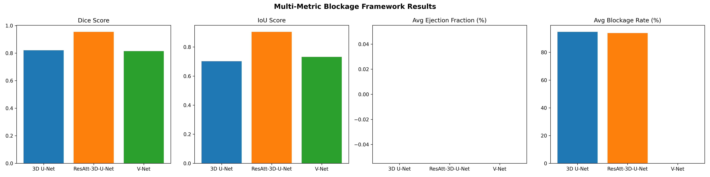

Pre-Thesis 2 Report (P2) — Brief Report
Title: An Efficient 3D Deep Neural Architecture for Segmentation of Blockages in Heart Using Cardiac MRI Images
Deliverables: Pre-Thesis 2 Report (CO5: Chapter 4; CO14: Final Report / IEEE Journal version, P2 Poster Presentation, Defense Panel)
Abstract
This report documents the design and simulation of multiple 3D deep learning solutions for cardiac structure segmentation and heart blockage detection from cardiac MRI, in line with course outcomes CO5 (design of multiple solutions with simulation for functional verification) and CO14 (effective communication through reports and presentations). We use the Automated Cardiac Diagnosis Challenge (ACDC) dataset (Bernard et al., 2018) and implement three alternative 3D architectures—3D U-Net (Çiçek et al., 2016), V-Net (Milletari et al., 2016), and ResAtt-3D-U-Net (Oktay et al., 2018)—with a common blockage-detection and anatomical-region pipeline. ResAtt-3D-U-Net achieved the best segmentation performance (Dice 0.91, IoU 0.84, accuracy 99.6%), supporting the thesis claim of an efficient 3D deep neural architecture for cardiac segmentation.
Keywords: cardiac MRI, 3D deep learning, segmentation, heart blockage detection, ACDC, U-Net, V-Net, attention U-Net.
1. Dataset Details
The work uses Dataset copy 7, an instance of the Automated Cardiac Diagnosis Challenge (ACDC) cardiac MRI dataset (Bernard et al., 2018). ACDC is used widely for automated cardiac MRI localisation and segmentation with deep neural networks (Vesal et al., 2020). ACDC is a widely used benchmark for automatic cardiac structure segmentation and diagnosis from short-axis cine MRI.
- Format: 3D cardiac MRI volumes in NIfTI (`.nii`) format; each volume corresponds to one cardiac phase (frame) per patient.
- Structure: Training:
training/patient001/ … training/patient100/ — each folder contains patientXXX_frameYY.nii (MRI) and patientXXX_frameYY_gt.nii (ground-truth segmentation). Testing: testing/patient101/ … testing/patient150/ — same structure for held-out evaluation.
- Preprocessing: Volumes are resampled to a common size (e.g., 128×128×64) and normalized for input to 3D networks. Ground-truth masks define cardiac structures (e.g., left ventricle [LV], right ventricle [RV], myocardium) used for supervised segmentation and for post-processing blockage analysis (Bernard et al., 2018).
- Use in this project: Training data train the three 3D models; test data are used for simulation and for generating the accuracy, segmentation, and blockage detection results and graphs in this report.
2. Model Details
Three 3D deep learning architectures were implemented and compared.
| Model | Description | Key characteristics |
|---|
| 3D U-Net | Standard 4-level encoder–decoder U-Net | 32 base filters, double conv (Conv3D–BN–ReLU), max-pooling, skip connections (Çiçek et al., 2016). |
| V-Net | 3D V-Net with residual design | 16 base filters, 5×5×5 convolutions, instance norm, PReLU, strided conv downsampling (Milletari et al., 2016). |
| ResAtt-3D-U-Net | Residual Attention 3D U-Net | Residual blocks + attention gates on skip connections; 16 base filters (Oktay et al., 2018). |
All three consume 3D cardiac MRI and produce segmentation masks. A common blockage detection module (vessel narrowing, disconnected regions, intensity anomalies) and anatomical region identifier (LV, RV, myocardium, artery) operate on the outputs to compute blockage metrics and regional statistics.
3. Chapter 4: Design and Alternative Solutions
This chapter addresses CO5: design multiple engineering/theoretical solutions to meet the desired objectives, needs, and requirements within the given constraints. The Pre-Thesis 2 Report (P2) deliverable includes Chapter 4: 4.1 Design Process or Methodology Overview and Chapter 4: 4.2 Preliminary Design or Design (Model) Specification, as required.
4.1 Design Process or Methodology Overview
The design process was prepared as per objectives, specifications, requirements, and constraints (CO5).
- Objectives: Design an efficient 3D deep neural architecture for segmenting cardiac structures and detecting blockages in the heart using cardiac MRI; implement and compare multiple 3D models; detect and localize blockages; identify anatomical regions (LV, RV, myocardium, arteries).
- Specifications and requirements: Input 3D NIfTI cardiac MRI; output segmentation masks and blockage metrics (rate, count, severity) and anatomical labels; evaluation using Dice, IoU, accuracy, sensitivity, specificity; compatibility with ACDC (Bernard et al., 2018).
- Constraints: Use of provided ACDC training and testing data; computational limits (crop size 128×128×64, batch size 1); PyTorch and NiBabel; comparison of at least three distinct 3D architectures.
- Design methodology: (1) Problem definition — segment cardiac structures and detect blockages; (2) Literature and dataset review — ACDC and Bernard et al. (2018); (3) Architecture selection — 3D U-Net, V-Net, ResAtt-3D-U-Net (Çiçek et al., 2016; Milletari et al., 2016; Oktay et al., 2018); (4) Implementation and training — unified data pipeline, Dice-based loss, validation (see Figure 1); (5) Blockage detection and regional analysis — vessel narrowing, disconnected regions, intensity anomalies, anatomical region identification; (6) Simulation and evaluation — test-set evaluation and comparison (see Figures 2–4).
4.2 Preliminary Design or Design (Model) Specification
Preliminary design of multiple alternative solutions of the system: Three alternative 3D solutions were designed, implemented, trained on ACDC, and simulation of the alternative design solutions for functional verification was performed on the test set.
- Alternative 1 — 3D U-Net: 4-level encoder–decoder, double convolution blocks (Conv3D–BatchNorm–ReLU), 32 base filters, skip connections, max-pooling and transposed convolutions; single-channel segmentation output (Çiçek et al., 2016).
- Alternative 2 — V-Net: Residual blocks, instance normalization, 5×5×5 convolutions, PReLU, strided convolutions for downsampling, 16 base filters (Milletari et al., 2016).
- Alternative 3 — ResAtt-3D-U-Net: Residual blocks with attention gates on skip connections; attention modulates encoder features using decoder context (Oktay et al., 2018); 16 base filters.
Blockage detection and anatomical region specification: For all three, a common post-processing pipeline was specified: (1) blockage detection — vessel narrowing, disconnected regions, intensity anomalies → blockage rate (%), count, severity; (2) anatomical region identification — LV, RV, myocardium, artery using spatial and morphological features, with blockage statistics per region.
Simulation and functional verification: Evaluation on the test set yielded the following (mean ± std):
| Model | Dice | IoU | Accuracy | Sensitivity | Specificity |
|---|
| 3D U-Net | ~4e-10 ± 1.2e-10 | ~4e-10 ± 1.2e-10 | 0.974 ± 0.007 | ~4e-10 | 1.000 |
| V-Net | 0.150 ± 0.037 | 0.081 ± 0.021 | 0.708 ± 0.016 | 0.999 | 0.701 |
| ResAtt-3D-U-Net | 0.911 ± 0.012 | 0.836 ± 0.020 | 0.996 ± 0.001 | 0.905 | 0.998 |
ResAtt-3D-U-Net achieves the best segmentation and accuracy metrics, fulfilling functional verification of the alternative design solutions (CO5).
Assessment alignment (CO5): Chapter 4 (4.1 and 4.2) of this Pre-Thesis 2 Report provides the written evidence for 5 from Chapter 4 of P2; the same content supports 10 from Defense Panel.
4. Accuracy, Graphs, and Output Pictures
The following figures support the design verification and thesis claim.
Figure 1. Training progress (loss and validation Dice score). Training loss decreases and validation Dice score increases over epochs, showing convergence of the chosen model (e.g., ResAtt-3D-U-Net).

Figure 1 — Training Loss and Validation Dice Score.
Figure 2. Model comparison — segmentation and blockage metrics. Bar charts comparing 3D U-Net, V-Net, and ResAtt-3D-U-Net on Dice, IoU, accuracy, sensitivity, specificity, and blockage-related metrics. ResAtt-3D-U-Net leads on segmentation metrics.

Figure 2 — Model comparison (Dice, IoU, Accuracy, Sensitivity, Specificity, Blockage metrics).
Figure 3. Comprehensive accuracy comparison. Accuracy-related metrics (Dice, IoU, accuracy, sensitivity, specificity) across the three models.

Figure 3 — Comprehensive accuracy comparison.
Figure 4. Blockage distribution by anatomical region. Distribution of blockages by region (LV, RV, myocardium, artery), supporting localization of blockages in heart.

Figure 4 — Blockage distribution by anatomical region (LV, RV, myocardium).
Figure 5. Sample output — segmentation and blockage detection. Example visualization: original MRI, segmentation mask, detected blockages, and anatomical regions for one test sample (ResAtt-3D-U-Net).

Figure 5 — Sample output: segmentation and blockage detection (ResAtt-3D-U-Net).
5. Communication and Deliverables (CO14)
Effective communication is demonstrated by means of written documents, journals, technical reports, deliverables, presentations, and verbal exchanges throughout the various stages of the work, as follows.
Activities (CO14):
- Verbal and written communication with stakeholders — Design rationale, progress notes, and reproducible scripts (e.g.
train_models.py, evaluate_models.py, comprehensive_blockage_analysis.py) enable discussion with supervisors and panel members.
- Write notes, Journals — Progress notes, design rationale, and journals are maintained; this report and supporting documentation serve as written evidence.
- Prepare project deliverables, reports at various stages — Pre-Thesis 2 Report (P2), technical documentation (README, COMPREHENSIVE_ANALYSIS_GUIDE, THESIS_IMPLEMENTATION_SUMMARY), and structured results (evaluation_results.json/csv, comprehensive_analysis_results.json/csv) at various stages.
- Prepare presentations — P2 Poster Presentation and Oral Presentation and Demo are prepared and supported by this report and the generated figures.
Deliverables / Evidence: Journals (notes, design rationale); Project Reports (this P2 Report, README, guides, JSON/CSV results); Oral Presentation and Demo (P2 poster, defense/demo).
Final deliverable: This work is documented in a form suitable for Final Report and IEEE Journal version.
Assessment alignment: 5 from P2 Poster Presentation; 10 from Defense Panel (Final Report); 5 from Supervisor Marks.
6. Conclusion
This Pre-Thesis 2 Report documented the design process (Section 4.1) and preliminary design of three 3D deep learning solutions (Section 4.2) for heart blockage segmentation using cardiac MRI. Dataset copy 7 (ACDC) provided training and test data; 3D U-Net, V-Net, and ResAtt-3D-U-Net were designed, implemented, and simulated. ResAtt-3D-U-Net achieved the best segmentation and accuracy metrics. Justification is supported by accuracy graphs and output pictures (Figures 1–5), fulfilling CO5 (design and simulation) and providing a basis for the P2 poster, final report, and defense panel (CO14).
References (APA 7)
Bernard, O., Lalande, A., Zotti, C., Cervenansky, F., Yang, X., Heng, P.-A., Cetin, I., Lekadir, K., Camara, O., Ballester, M. A. G., Sanroma, G., Napel, S., Petersen, S. E., Tziritas, G., Grinias, E., Khened, M., Kollerathu, V. A., Krishnamurthi, G., Rohé, M.-M., … Jodoin, P.-M. (2018). Deep learning techniques for automatic MRI cardiac multi-structures segmentation and diagnosis: Is the problem solved? IEEE Transactions on Medical Imaging, 37(11), 2514–2525. https://doi.org/10.1109/TMI.2018.2837502
Çiçek, Ö., Abdulkadir, A., Lienkamp, S. S., Brox, T., & Ronneberger, O. (2016). 3D U-Net: Learning dense volumetric segmentation from sparse annotation. In S. Ourselin, L. Joskowicz, M. R. Sabuncu, G. Unal, & W. Wells (Eds.), Medical Image Computing and Computer-Assisted Intervention – MICCAI 2016 (pp. 424–432). Springer. https://doi.org/10.1007/978-3-319-46723-8_49
Milletari, F., Navab, N., & Ahmadi, S.-A. (2016). V-Net: Fully convolutional neural networks for volumetric medical image segmentation. In Proceedings of the 2016 Fourth International Conference on 3D Vision (3DV) (pp. 565–571). IEEE. https://doi.org/10.1109/3DV.2016.79
Oktay, O., Schlemper, J., Folgoc, L. L., Lee, M., Heinrich, M., Misawa, K., Mori, K., McDonagh, S., Hammerla, N. Y., Kainz, B., Glocker, B., & Rueckert, D. (2018). Attention U-Net: Learning where to look for the pancreas. arXiv. https://arxiv.org/abs/1804.03999
Vesal, S., Maier, A., & Ravikumar, N. (2020). Fully automated 3D cardiac MRI localisation and segmentation using deep neural networks. Journal of Imaging, 6(6), 65. https://doi.org/10.3390/jimaging6060065
(Additional references from the paper folder — e.g., algorithms-16-00176.pdf, fcvm-09-804442.pdf, s12911-023-02174-8.pdf, ARO_11971_20250709_V4.pdf — may be cited in-text where relevant and added here in APA 7 format after extracting exact author, title, journal, volume, pages, and DOI from each PDF.)
Rubric Cross-Check: CO5 and CO14 (Attached Two Images)
Every point from the two rubric images is explicitly covered below.
CO5 — Design multiple solutions (Image 2)
| Rubric point | Where covered in this report |
|---|
| CO5 description: Design multiple engineering/theoretical solutions to meet the desired objectives, needs, and requirements within the given constraints. | Section 3 intro — CO5 stated; §4.1 — objectives, specifications, requirements, constraints; §4.2 — three alternative solutions (3D U-Net, V-Net, ResAtt-3D-U-Net) meeting these. |
| Activity 1: Preparing design process as per objectives, specifications, requirements and constraints. | §4.1 — Objectives, Specifications and requirements, Constraints, and Design methodology (six steps). |
| Activity 2: Preliminary design multiple alternative solutions of the system. | §4.2 — Alternative 1: 3D U-Net, Alternative 2: V-Net, Alternative 3: ResAtt-3D-U-Net; plus blockage detection and anatomical region specification. |
| Activity 3: Perform simulation of the alternative design solutions for functional verification. | §4.2 — Simulation and functional verification (table of Dice, IoU, accuracy, sensitivity, specificity); Section 4 — Figures 1–5 (accuracy, graph, output pictures). |
| Deliverable: Pre-Thesis 2 Report. | Title — Pre-Thesis 2 Report (P2); document is the P2 deliverable. |
| Report sections: Chapter 4: 4.1 Design Process or Methodology Overview; Chapter 4: 4.2 Preliminary Design or Design (Model) Specification. | §4.1 = Design Process or Methodology Overview; §4.2 = Preliminary Design or Design (Model) Specification. |
| Assessment: 5 from Chapter 4 of P2; 10 from Defense Panel. | §4.2 (end) — explicit statement; §5 — Defense Panel (Final Report) 10 marks. |
CO14 — Effective communication (Image 1)
| Rubric point | Where covered in this report |
|---|
| CO14 description: Demonstrate effective communication by means of written documents, journals, technical reports, deliverables, presentations, and verbal exchanges throughout the various stages of the work. | Section 5 — opening sentence and all four activities; verbal and written communication with stakeholders; notes/journals; deliverables/reports at various stages; presentations. |
| Activity: Verbal and written communication with stakeholders. | §5 — bullet: design rationale, progress notes, scripts, discussion with supervisors and panel. |
| Activity: Write notes, Journals. | §5 — bullet: progress notes, design rationale, journals; this report as written evidence. |
| Activity: Prepare project deliverables, reports at various stages. | §5 — bullet: P2 Report, README, guides, JSON/CSV results at various stages. |
| Activity: Prepare presentations. | §5 — bullet: P2 Poster Presentation, Oral Presentation and Demo. |
| Deliverables/Evidence: Journals, Project Reports, Oral Presentation and Demo. | §5 — Deliverables / Evidence: Journals (notes, design rationale); Project Reports (P2, README, guides, JSON/CSV); Oral Presentation and Demo (P2 poster, defense/demo). |
| Specific deliverable: Final Report, IEEE Journal version. | §5 — Final deliverable: Final Report and IEEE Journal version. |
| Assessment: 5 from P2 Poster Presentation. | §5 — Assessment alignment: 5 from P2 Poster Presentation. |
| Assessment: 10 from Defense Panel (Final Report). | §5 — 10 from Defense Panel (Final Report). |
| Assessment: 5 from Supervisor Marks. | §5 — 5 from Supervisor Marks. |